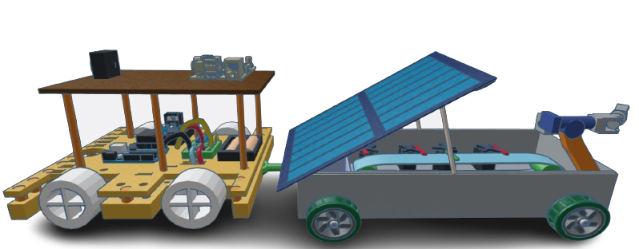
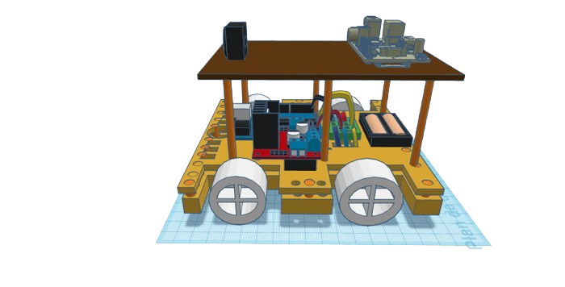
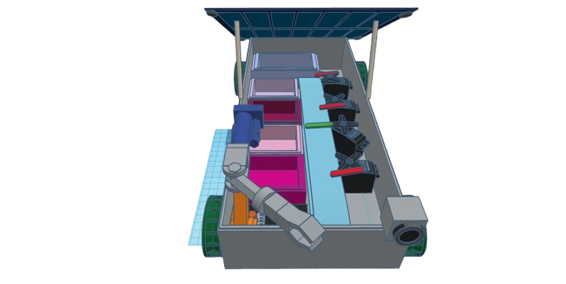

Welcome to the Garbage Collecting Robot
Your solution to a cleaner environment!
Watch the Robot in Action
Robot Overview

Mobility System
The robot is designed with advanced wheels and suspension systems for smooth movement on roads and uneven surfaces. Its powerful motors ensure steady navigation in urban and rural environments.
Garbage Collecting System
The robot uses its mechanical arm to collect garbage and sorts it using a treadmill system. Plastics and cartons are placed into designated boxes, ensuring efficient waste management.
How to Use the Robot
- 🔸 **Step 1**: Turn on the robot using the **ON/OFF button**.
- 🔸 **Step 2**: Activate the **treadmill system** to start garbage sorting.
- 🔸 **Step 3**: Place the robot on the road. It will **automatically detect** and collect garbage.
- 🔸 **Step 4**: Monitor the robot's sorting process as it places plastics in one box and cartons in another.
- 🔸 **Step 5**: Once the task is complete, turn off the robot.